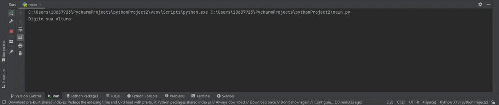
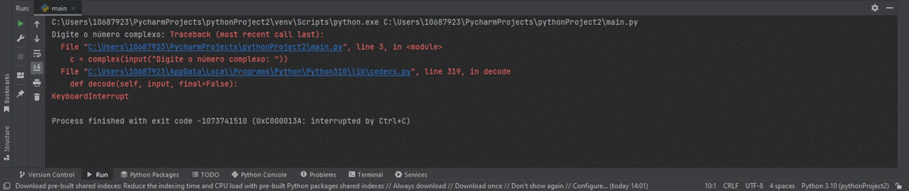
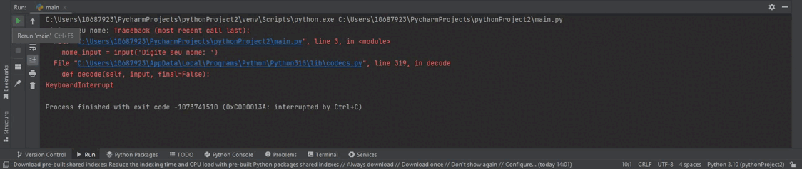

Variáveis
Aqui poderemos ver de fato as variáveis em python e entender melhor como funcionam, então abra o Pycharm vamos nessa.Inteiro
O tipo inteiro como você já deve saber são números inteiros que podem ser usados para contas, além de outras coisas, exemplo de numeros inteiros:
nota = 6
nota2 = 7
nota3 = 10
nota4 = 8
media = (nota+nota2+nota3+nota4)/4
print(f"A média das notas é {media}")
print(type(media))
print(type(nota))
print(type(nota2))
print(type(nota3))
print(type(nota4))
Resultado
Vemos no exemplo que as notas são do tipo inteiro já a média do tipo float, pois como as médias são somadas e divididas o resultado sai com vírgula, e o Python ja reconhece automaticamente o tipo da variável sem precisarmos dizer para ele.
Decimal (ponto flutuante (float))
O float é usado para caracteres decimais, isto é números que possuem virgúla (,) ou em inglês números com ponto (.)
variáveis float são ultilizadas quando os números que vão ser armazenados são do conjunto dos raxionais ou seja números que podem ser representados com frações, como altura ou peso, por exemplo.
altura = float(input('Digite sua altura: ' ))
peso = float(input('Digite seu peso: ' ))
imc = peso/altura
print(f"Seu imc é: {imc:.1f}")
print(type(imc))
print(type(altura))
print(type(peso))
Resultado

basicamente declaramos a variável como float typando a variável nesse caso, pois o input pega os dados digitados pelo usuário como string, então é necessário os converter em float.
E por fim o input como dito antes, serve como entradad de dados pelo usuário.
Complexo (complex)
Tipo de dado usado para representar números complexos (isso mesmo, aquilo que provavelmente estudou no terceiro ano do ensino médio).Esse tipo normalmente é usado em cálculos geométricos e científicos.
Um tipo complexo contem duas partes: a parte real e a parte imaginária, sendo que a parte imaginária contem um j no sufixo.
A função complex(real[, imag]) do Python possibilita a criação de números imaginários passando como argumento:real, que é a parte Real do número complexo e o argumento opcional imag, representando a parte imaginária do número complexo.
exemplos
a = (10*3j)
b = (5+9j)
c = complex(input('Digite o número complexo: ' ))
print(c)
print(type(c))
print(type(a, b))
print(type(a))
print(type(b))
print(complex(2, 5))
Resultado

String (str)
As strings são um conjunto de caracteres dispostas em uma determinada ordem, geralmente é usada para representar palavras, frases ou textos, porém podem representar apenas uma letra, símbolo ou número, porém estes últimos não podem ser usados em operações matemáticas.
As strings são sempre declaradas entre aspas símples ou duplas, e um input se não for declarado com outro tipo de variável será uma string.
Um número inteiro pode ser convertido em uma string colocando-os dentro do comando str.
Vejamos alguns exemplos:
nome = 'João
sobrenome = 'Ricardo
nome_input = input('Digite seu nome: ' )
idade_input = input('Digite sua idade: ' )
numero = 33
str(numero)
print(numero)
print(type(nome))
print(type(sobrenome))
print(type(nome_input))
print(type(idade_input))
print(nome_input)
print(idade_input)
Resultado

Booleano (bool)
Booleano é a tipagem de variável mais fácil de se entender, pois é um tipo de dado lógico que assume apenas dois valores> falso e verdadeiro (False ou True em Python)
Na lógica computacional, podem ser considerados como 0 False e 1 True.
Não é muito comum usarmos o boolean para declarar variáveis, sendo mais usado na verificação de resultados de expressões relacionais e lógicas.
Vejamos alguns exemplos:
fim_de_semana = True
feriado = False
print(fim_de_semana)
print(feriado)
print(type(fim_de_semana))
print(type(feriado))
Resultado